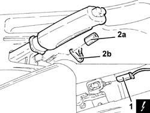
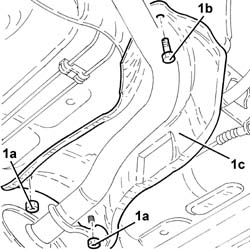
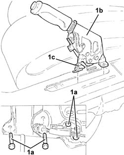

3380A10 handbrake lever - r+r
- Path
- Procedures > 33 BRAKING SYSTEM > 3380 HANDBRAKE > 3380A handbrake control and linkage > 3380A10 handbrake lever - r+r
- Kind
- repair procedure (removal / refitting; the operation number is the code)
- Applies to
- all engines; all production periods
- Interactive page
- https://sloeber94.github.io/elrnDB-a147/en/#/3025274
Applies to: all engines; all production periods
 Removing
Removing
 Refitting
RefittingPosition the vehicle on the ramp.
Ensure that the ignition key is in the OFF postition, then disconnect the battery negative terminal.
 | Name | Connector |
|---|---|---|
- | Battery |
Remove the handbrake boot.
1. Disconnect the electrical connection from the handbrake switch.
| Name | Connector |
|---|---|---|
1 | Handbrake switch |
2. Completely undo the adjustment nut (2a) and remove the retaining clip (2b).

Applies to: all engines; all production periods
1. Undo the nuts (1a) and bolt (1b) and move aside the front heat shield for the exhaust pipe (1c).

Applies to: all engines; all production periods
1. Undo the bolts (1a) and remove the handbrake lever (1b) complete with handbrake switch (1c).

Applies to: all engines; all production periods
Refitting
RemovingPlace the handbrake lever, complete with handbrake switch, back in its housing.
Tighten the bolts securing the handbrake lever.
Refit in its seating the front heat shield for the exhaust pipe and secure it with its nuts.
Refit the retaining clip in its seating and partially tighten the adjustment nut.
Adjust the travel of the handbrake lever 3380A04 handbrake - check travel .
Connect the electrical connection to the handbrake switch.
Place the handbrake boot back in its housing.
Connect the battery terminal (-).
Remove the car from the ramp.